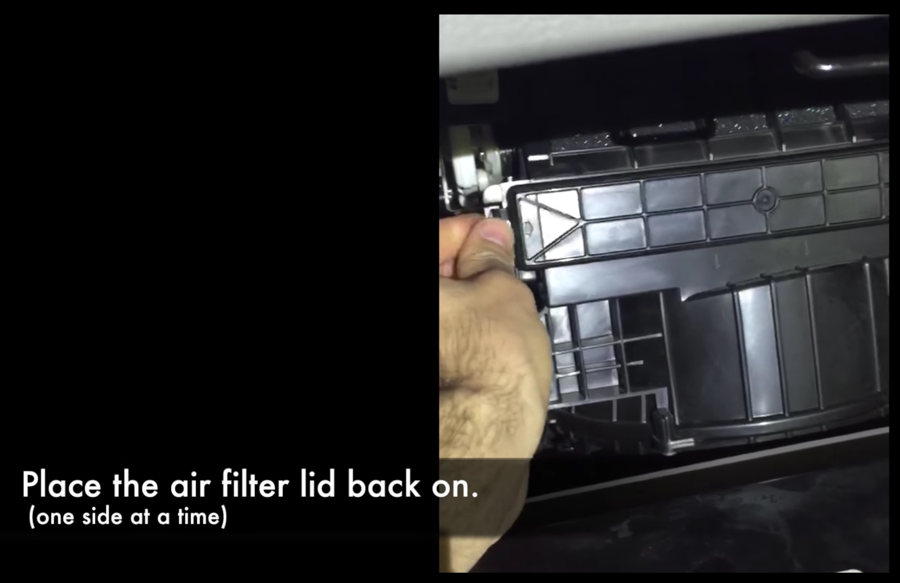

Issue: The Honda Dealership that gives you a great deal on an oil change wants $60-80 to change your Cabin Air Filter.
Solution: You can buy a Cabin Air Filter for $10-20, online, at Walmart or from the Honda Dealer Parts Department and install it yourself in about 30-60 seconds.
- Buy the in Cabin Filter for your 2012-2016 Civic online or in a store.
- Empty your glove compartment.
- Push in on the sides of the Glove Compartment on both sides (see picture) and lower the compartment door, it will swing all the way down.
- Push in on the sides of the air filter cover and pull the cover off toward you.
- Slide out old air filter, and place it inside the box or plastic sleeve from your new filter. Slide in the new Air Filter. Note: insert the filter so the air-flow direction indicated on the side of the filter is pointing down. The filter should be snug on the sides and only fits in one orientation, so if it is sticking out when you put it in rotate it one turn and put it back in until its flush on all sides.
- Replace the air filter cover. 
- Lift up glove compartment door, pushing in on the sides as before and close.